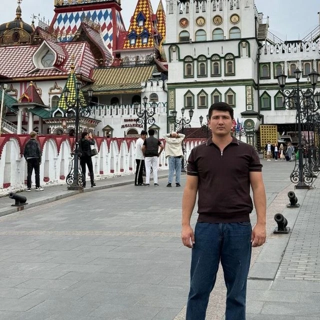

Ichki ishlar yo'lida raqamli bilim egallayapman
Salom, men Rahmatjon Qodirov. Farg'ona davlat universitetida rus tili filologiyasi bo'yicha bakalavr darajasini olganman. Ichki ishlar sohasida xizmat qilishni maqsad qilganman va shu yo'lda kompyuter savodxonligi hamda sun'iy intellektni o'rganyapman.

Ichki ishlar yo'lida
Bilim, intizom va sabr bilan
2000-yilda tug'ilganman. Til, mantiq va sport menga hayotda mustahkam asos berdi.
Ta'lim
Farg'ona davlat universiteti, Filologiya fakulteti, rus tili yo'nalishi — bakalavr darajasi. Matn va hujjat bilan puxta ishlash ko'nikmasi.
Matematika va tarix
Matematika mantiqiy fikrlashni, tarix esa o'tmishdan to'g'ri xulosa chiqarishni o'rgatadi. Ikkalasi ham menga juda yaqin.
Boks, tennis, bilyard
Sport — jismoniy chiniqish, intizom va diqqat. Bilyard va tennis esa sabr hamda sovuqqonlikni mashq qildiradi.
Zamonaviy ichki ishlar — raqamli ish
Bugun xodimdan nafaqat jasorat, balki texnologiyani bilish ham talab etiladi. Mana shuning uchun o'rganyapman.
Jinoyatchilik raqamlashmoqda
Firibgarlik va kiberjinoyatlar tobora ko'proq internet hamda telefon orqali sodir bo'lmoqda. Ularga qarshi kurashish uchun xodim texnologiyani tushunishi kerak.
Hujjat va ma'lumotlar bilan ishlash
Ariza, ma'lumotnoma, hisobot va elektron bazalar — hammasi kompyuterda. Tez va xatosiz ishlash vaqtni tejaydi va fuqaroga tezroq yordam beradi.
AI — kuchli yordamchi
Sun'iy intellekt matnni tahlil qilish, tarjima va hisobot tayyorlashni tezlashtiradi. Uni to'g'ri va mas'uliyat bilan ishlata olish — kelajak ko'nikmasi.
Fuqarolar bilan zamonaviy aloqa
Odamlar endi elektron xizmatlar va tezkor muloqotni kutadi. Raqamli savodli xodim ishonch va qulaylik yaratadi.
Qadam-baqadam oldinga
Asosdan boshlab, sun'iy intellektgacha — uch bosqichda o'rganaman.
Kompyuter asoslari
- Windows va fayllar bilan ishlash
- Word, Excel, PowerPoint
- Elektron pochta va bulutli xizmatlar
- Klaviaturada tez va to'g'ri yozish
Internet va xavfsizlik
- Xavfsiz internetdan foydalanish
- Parol va shaxsiy ma'lumotni himoyalash
- Firibgarlik (fishing) belgilarini tanish
- Davlat xizmatlari portallari
Sun'iy intellekt (AI)
- AI yordamchiga to'g'ri savol berish
- Matn, hujjat va hisobot tayyorlash
- Tarjima va ma'lumotni tezkor tahlil
- AI xatolarini tekshirib borish
Keling, bog'lanamiz
Maslahat, taklif yoki savol bo'lsa — bemalol yozing yoki qo'ng'iroq qiling.